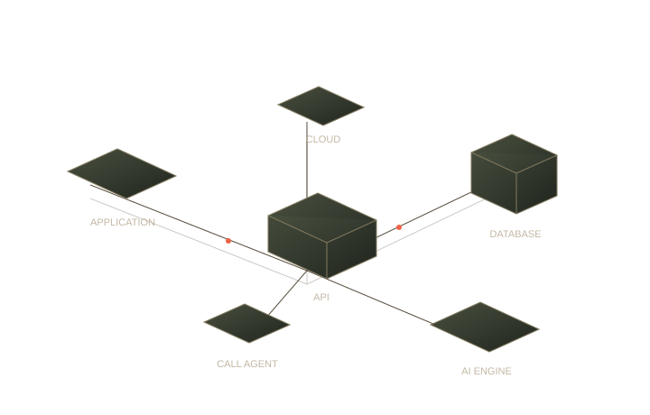

Backend
systems.
Smart IPTV · AdsDen
APIs, data models, authentication and background jobs. The dependable foundations behind streaming platforms, ad systems and connected products.
Python · Django · Node.js · PostgreSQL · Redis
Backend · Full-Stack · AI Systems
I connect the dots between
an idea and the software
that makes it work.
Thoughtful backends. Connected applications.
AI with a purpose.

App → API → Database → Response
Different products. The same focus:
make the complex feel simple.
Smart IPTV · AdsDen
APIs, data models, authentication and background jobs. The dependable foundations behind streaming platforms, ad systems and connected products.
Python · Django · Node.js · PostgreSQL · Redis
Referral Ally · Web applications
Interfaces and backend services built to work together. Real-time communication, payment flows, dashboards and the application logic underneath.
React · Next.js · TypeScript · NestJS · Prisma
Applied AI · Automation · Call agents
Language models connected to useful actions: sentiment analysis, task prioritization, workflow automation and AI call agents that connect conversations to application workflows.
OpenAI · Gemini · Ollama · n8n · API integrations
Mobile connectivity, server selection and subscription flows. Streaming and media pipelines that connect content, devices and the people using them.
Android · VPN · HLS / DASH · Cloud delivery
Reliable services, clear API boundaries, sensible data models and background processing. Designed to be understood, maintained and improved.
Python / Django / FastAPI
Node.js / NestJS / Fastify / TypeScript
PostgreSQL / MySQL / MongoDB / Redis
BullMQ / Celery / Docker / Nginx / AWS
Thoughtful interfaces connected to real business logic. From authentication and payments to real-time messaging, the parts work as one product.
React / Next.js / TypeScript
REST APIs / Prisma / Pusher
Stripe / Stripe Connect
Application integrations / Web workflows
Useful intelligence, connected to the product. LLM integrations, sentiment analysis, task automation and AI call agents with conversation flows, tool connections and human handoff.
OpenAI API / Gemini / DeepSeek
Ollama / n8n / Prompt workflows
AI call agents / Voice workflows
Classification / Task prioritization
One connected practice: backend depth, full-stack perspective, practical AI.
Ghulam Muhammad Akhonzada
Software Engineer · Islamabad, Pakistan
I like making complex
things work simply.
My work moves between backend systems, full-stack products and AI. I've worked on mobile connectivity, streaming, advertising systems and healthcare workflows. Different products; the same curiosity about how everything connects.
I care about the questions underneath the interface. Where should the data go? What happens when a service fails? How can the next engineer understand this without a meeting?
For me, good engineering is not just making it run. It's making the next step clearer.
Let's talk about your idea01Understand the problem.
02Connect the right pieces.
03Build. Learn. Improve.
A product idea, a backend challenge,
or an AI workflow worth building.
Built with intent, by GM. Back to the beginning